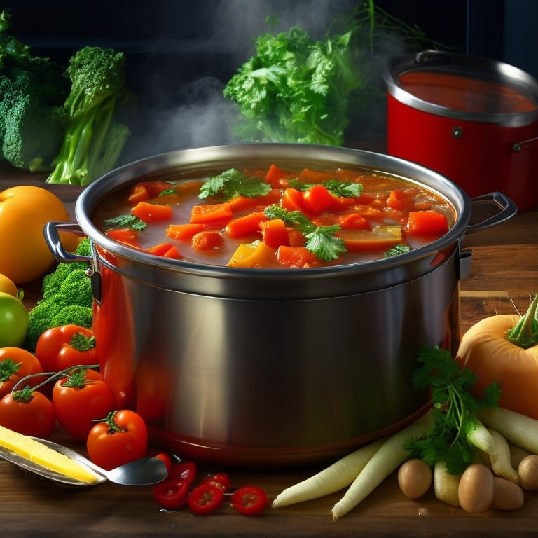

Soup-er Powers of Tidy Evaluation: Understanding rlang with a Culinary Twist

Welcome to a culinary exploration of R programming. Today’s special is Tidy Evaluation served with a side of the rlang package, seasoned with a sprinkling of metaphors to help us digest these complex concepts. Just as we’d piece together a hearty soup from an assortment of ingredients, we’re about to construct a deeper understanding of coding principles from their fundamental components. This gastronomic journey will take us through the kitchen of quasiquotation, the larder of unquoting, and the simmering pot of splicing. By the end, you’ll not only have sharpened your coding skills but also your metaphorical culinary prowess.
The Recipe for Coding: An Introduction to Tidy Evaluation
Tidy evaluation is the sous chef in the kitchen of data manipulation in R. It follows a recipe to prepare our data, understanding when to keep parts of the recipe as it is (quotation), when to replace them with specific ingredients (unquoting), and how to mix everything together for the final dish (splicing).
But let’s not get ahead of ourselves. Imagine you’re planning a dinner. You have a recipe in mind — a ‘blueprint’ if you will. But this blueprint is flexible, allowing for creativity and adaptability. You know you’re making a vegetable soup, but the choice of vegetables is not set in stone. This is the essence of Tidy Evaluation: it’s a blueprint for data manipulation and analysis, but with placeholders for flexibility.
# Imagine this is your vegetable soup blueprint
veggie_soup <- function(df, veggies) {
veggies <- enquo(veggies)
soup <- df %>% select(!!veggies) %>% sum()
return(soup)
}In the function above, veggies is like your selection of vegetables. It’s not specified yet, and that’s perfectly fine. Tidy Evaluation understands and appreciates the need for flexibility.
Let’s dive deeper into these concepts, starting with the first step of our recipe: quasiquotation.
Quasiquotation: Deciding What to Cook
Stepping into the world of quasiquotation is like standing in the doorway of your kitchen, contemplating the soup you’re about to cook. You’ve decided it’s going to be a vegetable soup, but you haven’t yet chosen which vegetables to include. This preliminary step is the essence of quasiquotation, creating a generalized plan while leaving room for details to be decided later.
In R, quasiquotation enables us to define broad strokes of our code, leaving placeholders for specific elements that will be defined upon execution. It’s the ‘vegetable’ part of our ‘vegetable soup’ — undefined yet, but ready to take shape as we proceed.
To illustrate this concept, let’s revisit the veggie_soup function, this time with a tailored dataset to suit our metaphor:
library(rlang)
library(dplyr)
# Create a data frame
df <- data.frame(
carrots = rnorm(10, mean = 5, sd = 1),
peas = rnorm(10, mean = 7, sd = 1),
beans = rnorm(10, mean = 6, sd = 1)
)
# Use our previously created veggie_soup function
veggie_soup(df, carrots)
# [1] 49.81116 # can be different because of different rnorm() result.In this example, veggies acts as our placeholder, like the ‘vegetables’ in our soup. It could represent ‘carrots’, ‘peas’, ‘beans’ or any other vegetable (column) we later decide to use. The enquo() function is our commitment to make a decision about the specific vegetable later when we’re ready to start cooking, or in our case, running the code.
We’ve set the stage with quasiquotation and decided to cook a soup. But what specific ingredients will find their way into our pot? It’s time to add specificity with unquoting and move to the next phase of our culinary code tour.
Unquoting: Adding the Ingredients
Unquoting in R is like unveiling the mystery of our ‘vegetable’ from the soup recipe. This is the moment where we decide whether it’s carrots, peas, beans, or maybe even a mix of all three. Unquoting allows us to specify the previously vague ‘vegetable’ and turn it into a tangible ingredient.
Just like choosing a specific vegetable brings our soup one step closer to reality, unquoting in R brings specificity to our previously generalized code. It transforms our plan from an abstract concept into an executable operation.
Let’s continue with our veggie_soup function to see how unquoting comes into play:
# Continue with the same data frame
df <- data.frame(
carrots = rnorm(10, mean = 5, sd = 1),
peas = rnorm(10, mean = 7, sd = 1),
beans = rnorm(10, mean = 6, sd = 1)
)
# Now, we decide the specific ‘vegetable’ for our soup
veggie_soup(df, carrots) # we’ve chosen carrots
# [1] 54.64131
veggie_soup(df, peas) # we’ve chosen peas
# [1] 70.17853In the code above, veggies is no longer a placeholder. By calling the veggie_soup function with specific column names (our ‘vegetables’), we’re unquoting veggies and turning it into a specific ingredient for our soup. The !! operator helps us ‘unquote’ and turn our veggies placeholder into a tangible ‘vegetable’ (or column of data).
With our ingredients finally added to the soup, we’re all set to stir the pot and blend our ingredients. It’s time to navigate the final process of our coding journey — splicing. Let’s proceed and see how our vegetable soup finally comes together.
Splicing: Combining the Ingredients
Splicing in R is the process of mixing all our chosen ingredients together, similar to combining all the vegetables in our soup pot. Just as the flavors blend and infuse together to create a delicious soup, splicing in R allows us to combine different elements of our code to create a unified output.
Splicing works by taking a list of arguments and merging them into the function call. It’s the equivalent of adding all your chosen vegetables into the pot at once.
Let’s say we decide to make a soup using a variety of vegetables, not just one. In R terms, we’re splicing a list of variables (vegetables) into our function. Let’s see how this would work:
# Continue with the same data frame
df <- data.frame(
carrots = rnorm(10, mean = 5, sd = 1),
peas = rnorm(10, mean = 7, sd = 1),
beans = rnorm(10, mean = 6, sd = 1)
)
# New function to handle multiple variables (ingredients)
veggie_soup_multi <- function(df, ...) {
veggies <- enquos(...)
soup <- df %>% select(!!!veggies) %>% colSums()
return(soup)
}
# Call the function with multiple vegetables
veggie_soup_multi(df, carrots, peas)
# carrots peas
# 50.64524 67.24631 In the above code, the ... in the function arguments enables us to take multiple inputs. The enquos() function is used to capture all the inputs, and the !!! operator is used to splice them into the function call. We’ve effectively added all our chosen vegetables into the soup at once.
With this, we’ve successfully prepared our ‘soup’ of code, using quasiquotation to decide on the recipe, unquoting to add specific ingredients, and splicing to bring everything together. Now, we’re ready to appreciate the flavors of our dish and see how these concepts simplify our coding process. Let’s delve deeper into their applications in the rlang package.
Cooking Up Tidy Evaluation: Practical Applications of rlang
As we move further into our metaphorical kitchen, let’s shift our attention to the rlang package, our trusty sous-chef in the R culinary world. With rlang, you can leverage the principles of quasiquotation, unquoting, and splicing to handle data manipulation and analysis tasks, akin to the way you’d handle complex soup recipes.
Imagine if you had a magic ladle that could precisely adjust the flavor and texture of your soup based on your preferences. That’s the role of the rlang package, providing tools to navigate and customize the complexities of your coding soup.
Let’s bring in some examples to see these concepts at work within the rlang package:
library(rlang)
# Create a data frame
df <- data.frame(
carrots = rnorm(10, mean = 5, sd = 1),
peas = rnorm(10, mean = 7, sd = 1),
beans = rnorm(10, mean = 6, sd = 1)
)
# Function to calculate the sum using rlang principles
veggie_sum <- function(df, ...) {
veggies <- enquos(...)
total <- df %>% summarise(across(c(!!!veggies), sum))
return(total)
}
# Apply the function
veggie_sum(df, carrots, peas)
# carrots peas beans
# 1 56.23853 70.27977 54.40955In this example, the veggie_sum function uses principles from our metaphorical soup-making process. The enquos(...) part represents the quasiquotation, leaving room for unspecified ‘vegetables’. When we call the function with specific column names like ‘carrots’ and ‘peas’, we’re effectively unquoting the variables. The !!! operator, known as the ‘bang-bang-bang’ operator, performs the splicing action, combining all specified ‘vegetables’ into a wholesome soup.
This functional application of the rlang package can simplify and streamline your data manipulation process, making your time in the ‘kitchen’ of R programming more productive and enjoyable. It’s like having a set of precision kitchen tools at your disposal, allowing you to effortlessly cook up the perfect coding soup.
Next, we’ll delve deeper into how Tidy Evaluation enhances your coding efficiency, much like how a well-planned recipe leads to a scrumptious soup. Let’s serve up the final dish.
The Final Dish: How Tidy Evaluation Streamlines Your Coding
Imagine the satisfaction of savoring a well-cooked vegetable soup — the ingredients perfectly chosen and combined, the flavors finely balanced. That’s akin to experiencing the efficiency and productivity boost when you utilize Tidy Evaluation in your coding.
Tidy Evaluation acts as your ‘soup recipe’ for clean and efficient coding. It simplifies your code, makes it more readable, and ensures it’s adaptable to different datasets — the equivalent of having a versatile soup recipe that can accommodate various ingredients without compromising flavor.
With Tidy Evaluation, your code becomes ‘tidy’. Variables aren’t evaluated immediately but are captured and held until you’re ready to unquote them. This gives you the ability to manipulate and compute on them in a highly flexible way — just like swapping vegetables in and out of your soup recipe to suit your taste.
Consider a scenario where you want to calculate the mean of all variables in your data frame:
# Function to calculate mean using rlang principles
veggie_mean <- function(df, ...) {
veggies <- enquos(...)
mean_vals <- df %>% summarise(across(c(!!!veggies), mean))
return(mean_vals)
}
# Apply the function
veggie_mean(df, carrots, peas, beans)
# carrots peas beans
# 1 5.623853 7.027977 5.440955Here, we’re using all three techniques — quasiquotation, unquoting, and splicing — to create a versatile function that calculates the mean of any combination of columns. This saves us time and makes our code reusable, no matter how we want to alter our ‘soup’ of data.
With Tidy Evaluation in your coding toolkit, your programming becomes more streamlined and efficient, giving you more time to savor the results of your work. Now, let’s wrap up and see how our soup has turned out.
Conclusion
As we step away from our kitchen of code, let’s savor the flavors of our final dish — the soup of tidy evaluation, cooked to perfection with the rlang package.
We started our journey by preparing the recipe with quasiquotation, where we decided what to cook but kept our ingredients vague. The abstract ‘vegetable’ in our soup recipe served as a placeholder, much like the enquoted variables in our code.
Next, we added specificity to our recipe by unquoting — deciding on the exact vegetables that would flavor our soup. In the same vein, unquoting in our code allowed us to replace placeholders with specific variables, bringing clarity and precision to our functions.
Finally, we combined all our ingredients in the pot through the process of splicing, merging different elements to create a unified output. Similarly, splicing in R enabled us to weave together different parts of our code, creating a comprehensive and efficient function.
Tidy evaluation, with its principles of quasiquotation, unquoting, and splicing, equips us with the tools to streamline our coding process, just as a well-crafted recipe guides us to create a delightful soup. It simplifies code, enhances readability, and amplifies flexibility — a testament to the power of the rlang package.
Like any chef honing their culinary skills, mastering the art of tidy evaluation requires practice. I encourage you to experiment with these concepts, using the rlang package to navigate your way around the kitchen of R. As you mix and match your ingredients, you’ll find yourself cooking up a storm of clean, efficient, and robust code.
So, put on your coding apron, embrace the philosophy of tidy evaluation, and start cooking up your unique coding soup. Bon Appétit!